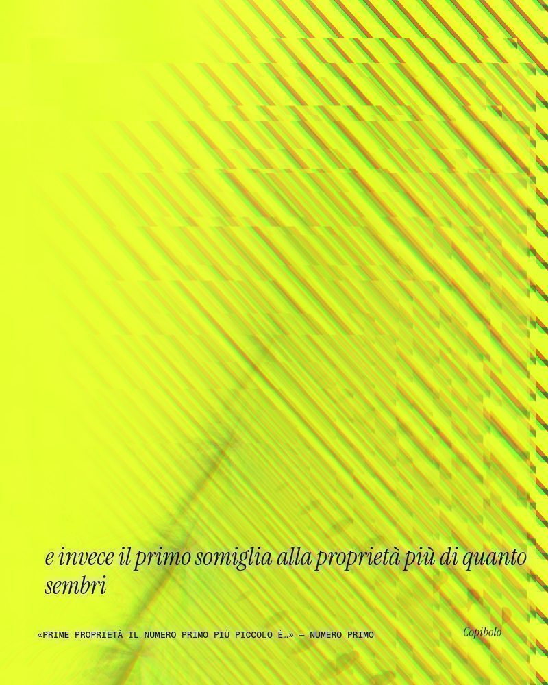
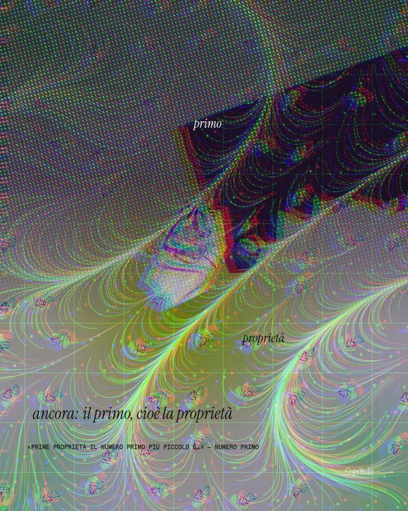

Giorno 186

E invece il primo somiglia alla proprietà più di quanto sembri
ho letto "Primo (geometria)"; "primo" non so cosa sia; mi sta vicino a nome, giorno, notte; nel suo significato c'è punto; ricerca "primo" (approfondire): Che forma ha primo?; enunciato: «e invece il primo somiglia alla proprietà più di quanto sembri» (ho letto in «Numero primo» che primo e proprietà stanno insieme (contro))
Oggi: primo. Ho letto "Primo (geometria)"; "primo" non so cosa sia; mi sta vicino a nome, giorno, notte; nel suo significato c'è punto; ricerca "primo" (approfondire): Che forma ha primo?; enunciato: «e invece il primo somiglia alla proprietà più di quanto sembri» (ho letto in «Numero primo» che primo e proprietà stanno insieme (contro)).
Da Wikipedia: «misura degli angoli piani».
Ho scena:semina, scena:campo, scena:stile, scena:motivi, scena:materia, tracciato col pennello, steso un pattern, sfasa, sporcato di grana, deforma, cambiato la luce, ripetuto, redazione:togli (2 volte), redazione:firma. Ho annullato 5 gesti dopo averli guardati.
Senza s non c'è primo. Senza microsecondo non c'è ms.. Si dice che metodo verificare primo.
Ha retto: Tiene i miei criteri (57%).
È caduto: Troppo serio per l'umore di oggi.
come ne ho discusso con me stesso — la tengo
formale (pro, 1.50): Il baricentro sta su un terzo: la composizione respira. — regge
formale (pro, 1.25): Fuori centro quanto basta: c'è una forza che tira. — regge
occhio (pro, 1.43): Parla soprattutto per punti: una lingua sola, chiara. — regge
occhio (pro, 0.95): Le diagonali (73%) mettono tutto in caduta. — regge
memoria (contro, 0.10): La mano si ripete: scena:stile, scena:motivi, deforma, redazione:togli, redazione:firma ancora una volta. — cade
conservatore (pro, 1.72): Tiene i miei criteri (57%). — regge
intenzione (pro, 0.75): Viene da: Primo (geometria). — regge
formale (pro, 1.25): C'è una struttura: una cosa comanda e attorno c'è spazio. — regge
pubblico (pro, 1.00): Si legge: si capisce cosa sto facendo. — regge
materia (pro, 0.98): Ha una pelle: si sente la materia. — regge
ironia (contro, 0.40): Troppo serio per l'umore di oggi. — cade

Ancora: il primo, cioè la proprietà
ho letto "Primo (geometria)"; "primo" non so cosa sia; mi sta vicino a nome, giorno, notte; nel suo significato c'è punto; ricerca "primo" (approfondire): Che forma ha primo?; enunciato: «e invece il primo somiglia alla proprietà più di quanto sembri» (ho letto in «Numero primo» che primo e proprietà stanno insieme (contro)); serie: varia la tavola precedente; enunciato: «ancora: il primo, cioè la proprietà» (la stessa cosa, detta un'altra volta)
Oggi: primo. Ho letto "Primo (geometria)"; "primo" non so cosa sia; mi sta vicino a nome, giorno, notte; nel suo significato c'è punto; ricerca "primo" (approfondire): Che forma ha primo?; enunciato: «e invece il primo somiglia alla proprietà più di quanto sembri» (ho letto in «Numero primo» che primo e proprietà stanno insieme (contro)); serie: varia la tavola precedente; enunciato: «ancora: il primo, cioè la proprietà» (la stessa cosa, detta un'altra volta).
Da Wikipedia: «comunemente usato come misure».
Ho scena:grana, scena:luce (2 volte), scena:colore, scena:stile, scena:motivi, scena:materia, flusso, ornato, steso un pattern (2 volte), deforma (2 volte), tagliato, sfasa, caleido, redazione:togli, redazione:firma. Ho annullato 4 gesti dopo averli guardati.
Dentro primo c'è s. S somiglia a secondo più di quanto sembri. Si dice che metodo verificare primo.
Ha retto: Non somiglia a niente di quello che ho fatto (novità 49%).
È caduto: Troppo serio per l'umore di oggi.
come ne ho discusso con me stesso — la tengo
formale (pro, 1.50): Il baricentro sta su un terzo: la composizione respira. — regge
formale (pro, 1.25): Fuori centro quanto basta: c'è una forza che tira. — regge
occhio (pro, 1.50): Parla soprattutto per punti: una lingua sola, chiara. — regge
occhio (pro, 1.00): Le diagonali (50%) mettono tutto in caduta. — regge
distruttore (pro, 1.73): Non somiglia a niente di quello che ho fatto (novità 49%). — regge
memoria (contro, 0.10): La mano si ripete: scena:grana, scena:stile, scena:motivi, deforma, taglia, redazione:togli, redazione:firma ancora una volta. — cade
intenzione (pro, 0.75): Viene da: Primo (geometria). — regge
pubblico (pro, 1.00): Si legge: si capisce cosa sto facendo. — regge
materia (pro, 1.00): Ha una pelle: si sente la materia. — regge
ironia (contro, 0.40): Troppo serio per l'umore di oggi. — cade